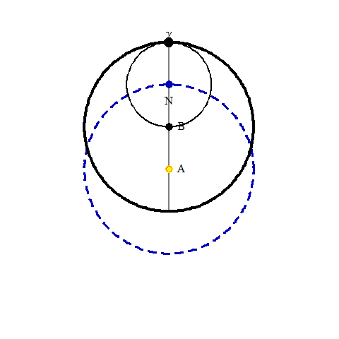
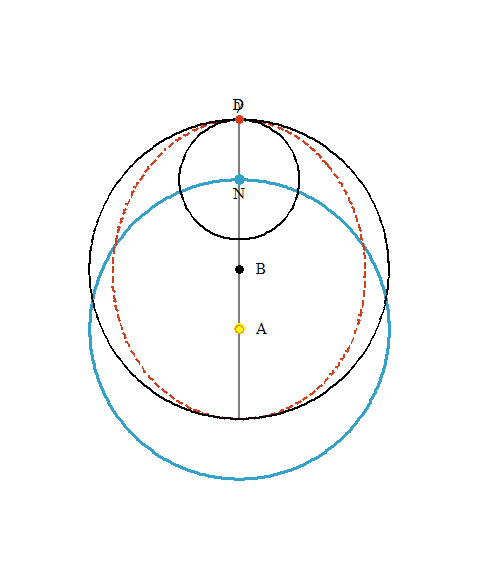
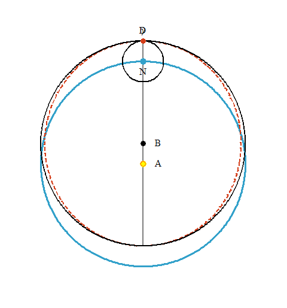
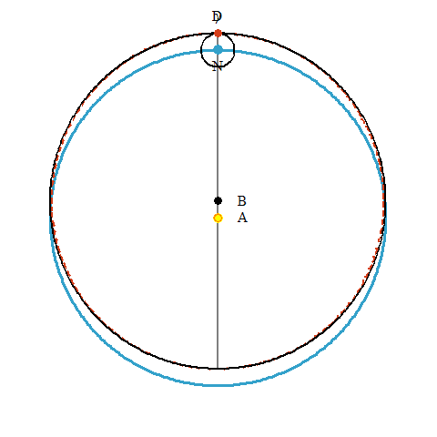

Chapter 45
Making an Oval

Repeated here is the diagram from chapter 39, where the angle γND changed at a nonuniform rate to keep the planet moving on a circle.
Now, in chapter 45, we have Kepler's first proposal for generating the non-circular path of the planet. Recall the absurdity from chapter 39 of the difficulty of the planet moving on its epicycle at a non-uniform rate, having foreknowledge of its speed. "Therefore, let it be that this absurdity is avoided: let AC still go nonuniformly, but let the planet go uniformly from γ to D." This means that in the early parts of the orbit past aphelion, angle γND will be greater than angle γAC, because the planet is slow near aphelion, while the planet's speed on the epicycle is constant. This causes the path to squeeze in on the sides.
“Consequently, the angle γND will be greater than the angle γAC. So ND will not be parallel to AB but will be inclined towards AC. Thus the planet D will not stay on the circle which it began todescribe from C, the one, that is, which goes through CF, but will encroach from the circumference D and the parallel ND towards CA. And this is exactly the testimony of the distances AD computed from the observations in the preceding chapter, namely, that they do not reach all the way to the circumference of the circle CF [as seen in Chapter 44]. This same thing is also testified by the physical equations [in the 8' difference in Chapter 43].” (p.456)
This motion is animated here with eccentricities 0.4, 0.2, and 0.1 (which are 40000, 20000, and 10000 in Kepler's way of writing).


| Next |